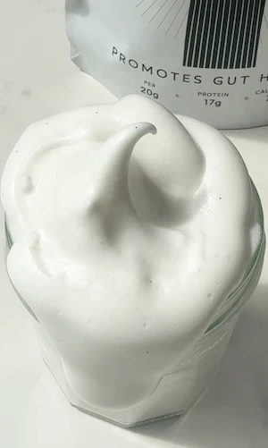

Vanilla Bean Marshmallow Fluff (4 Ingredients) (light, fluffy 4-ingredient refined sugar free treat)
how dreamy is this 4 ingredient homemade vanilla bean marshmallow fluff? this recipe is especially nostalgic for me because i grew up eating marshmallow fluff and putting it on absolutely everything. it was one of those childhood breakfast memories that i wanted to recreate but with something made from real ingredients and without all the added ingredients.
this version is a much healthier alternative, made with just four simple ingredients and refined sugar-free. it has the same soft, pillowy texture you remember but it's made with nourishing ingredients yet just as addictive as the real deal.
if you've been wanting to try making homemade marshmallows (like my 4-ingredient matcha marshmallows) but feel slightly intimidated, this marshmallow fluff is the perfect place to start. one of the trickiest parts of making marshmallows is knowing exactly when to stop beating the mixture. beat it too little and it won't hold its shape, but beat it too long and the mixture can become too stiff and start setting in the bowl before you can transfer it. the exact timing can vary depending on your mixer's speed and power, as well as the temperature of the sugar mixture.
although the technique is very similar to making regular marshmallows, you stop a few minutes earlier which makes the recipe a lot more forgiving than making marshmallows. the texture you're aiming for is soft, spreadable, and holds a peak without being set. the moment you can lift the whisk and the fluff holds a soft, droopy peak that slowly falls back on itself is when you know it's done. if you go a minute or two past that point it starts to get stiffer and more like a proper marshmallow rather than a spreadable fluff, so keep an eye on it as you're mixing. a stand mixer makes this much easier because you can watch the texture without trying to hold everything at once.
since this vanilla bean marshmallow fluff is homemade and not store bought there are no stabilizers or additives that keep the fluff in its “fluff state/texture”. this means that depending on how it's stored and the longer it sits for, the thicker and more set the marshmallow fluff will become. the simple fix to this is to just lightly heat the marshmallow fluff until it gets back to ur desired spreadable consistency. i like storing it in a jar in the fridge and then placing the jar in a bowl of hot water for a few minutes and mixing until spreadable. you will find that the marshmallow fluff changes state pretty quickly, so ensure it's not heated too much to the point it turns liquid lol.
whenever i make this homemade marshmallow fluff, it is one of the most versatile things i have in my fridge at any given time. i spread it on rice cakes or toast with a bit of almond butter, i swirl it into warm porridge or my yogurt bowl, i've piped it onto brownies as a frosting. the possibilities are truly endless, so enjoy however you like!
a moment for the flavour because i'm not sure how i haven't mentioned it yet! instead of your typical marshmallow fluff this one is made with vanilla bean, which tastes just as magical as you can imagine. you can opt for vanilla extract instead but there is a trade off in the flavour profile. the flavour from the pods develops while we heat it with the maple syrup and water, feel free to throw in the pods too for maximum vanilla goodness. just ensure you remove the pods before adding the mixture to the bloomed gelatin. the use of vanilla pods also adds the most beautiful little flecks throughout the mixture, making it feel and look extra special. it's hard to believe it's made at home with just 4 ingredients!
onto the gelatin, which is a pure protein source derived from collagen that supports joint health, gut lining integrity, and has been associated with improved skin elasticity. it's also what gives this fluff that pillowy, cloud-like texture. if you are vegetarian or vegan, agar agar will work as a substitute but the texture will be slightly different and it isn't as simple as a 1:1 sub in this recipe, but i can test a vegetarian version if you'd prefer, just let me know in the reviews!
for storage, store in an airtight jar in the fridge for up to 5 days. the fluff will stiffen slightly as it chills but comes back to a spreadable consistency quickly at room temperature. if it's too firm, a few seconds in the microwave or placing the jar in a bowl of hot water and a stir will loosen it right back up. if you love this recipe, my 4 ingredient matcha marshmallows and my cherry marshmallows use the same technique but taken all the way to a set marshmallow, which is the next step up if you want to try it.
enjoy this healthier marshmallow fluff spread on toast, dolloped onto desserts, or swirled into your bakes!
Frequently Asked Questions
How do I store homemade marshmallow fluff?
Store marshmallow fluff in an airtight container in the refrigerator for up to 5 days. It will firm up as it chills, but you can easily soften it by gently warming it in the microwave for a few seconds or placing the container in warm water. Give it a stir after warming to restore the smooth, spreadable texture.
What does it mean to bloom gelatin?
Blooming gelatin simply means allowing the gelatin powder to absorb liquid before it's heated. This step hydrates the gelatin so it dissolves smoothly and creates the soft, fluffy texture marshmallows are known for. Skipping this step can result in undissolved gelatin lumps in the final mixture, so make sure to bloom for at least 5 minutes.
Can you make marshmallow fluff without corn syrup?
Yes, this marshmallow fluff recipe is made without corn syrup and so are my matcha marshmallows. Traditional marshmallow fluff recipes use corn syrup to prevent crystallisation and add body, but maple syrup or honey work beautifully as natural alternatives that keep this recipe refined sugar free.
Can I use vanilla extract instead of vanilla bean?
Yes, vanilla extract works as a substitute. Use 1 to 1.5 teaspoons of good quality vanilla extract in place of the vanilla bean pod. The flavour will be slightly less complex and intense than real vanilla bean, and you won't get the beautiful little black flecks, but it still tastes absolutely delicious and is a much more affordable option.
Why is my marshmallow fluff not thickening?
If the fluff isn't thickening, the most likely reason is that the hot liquid wasn't hot enough when added to the bloomed gelatin, or the mixer speed wasn't high enough. Make sure the maple syrup mixture is really hot (steaming, not just warm) before slowly pouring it into the mixing bowl, but don't let it come to a boil. Then beat on the highest speed your mixer allows and give it the full 8 to 10 minutes. The transformation from liquid to fluffy takes time and patience.
Can I make marshmallow fluff without a stand mixer?
A stand mixer is the easiest way to make this fluff as the mixture needs sustained high-speed beating for 8 to 10 minutes. A handheld electric mixer also works but can be tiring to hold at that speed for that long. Using a whisk by hand is not suitable as the mixture sets quickly and needs more power than hand whisking can provide.
Is this marshmallow fluff suitable for vegans?
Unfortunately, this recipe uses gelatin which is animal-derived, so it is not vegan. Agar-agar powder is sometimes suggested as a plant-based substitute, but it behaves very differently to gelatin. It sets firmer and is less stretchy, so it doesn't produce the same soft, pillowy marshmallow texture. If you need a vegan version, aquafaba (the liquid from a can of chickpeas) whipped with cream of tartar is a popular plant-based alternative to gelatin for marshmallow fluff.
What can I use marshmallow fluff for?
So many things! Spread it on toast or waffles for a nostalgic, healthier treat. Swirl it into hot chocolate, oat milk lattes, or warm drinks for a luxurious frothy topping. Use it to make healthier s'mores with graham crackers and dark chocolate, or dollop it onto desserts for an impressive finish. It's also wonderful folded into smoothies or used as a topping for healthy ice cream. The flavour is neutral and sweet enough to work in almost any sweet context.
Pro Tips
- Ensure the gelatin is properly bloomed for at least 5 minutes before adding the hot liquid.
- Use real vanilla bean for the best flavour. The flecks make it look and taste extra special.
- Serve it fresh for the best soft, spreadable texture.
- Stop beating as soon as the fluff thickens and can loosely hold its shape. Overmixing causes it to set in the bowl before you can transfer it to a container.
Vanilla Bean Marshmallow Fluff (4 Ingredients)

Ingredients
Instructions
- Step 1: To your stand mixer add the gelatin and 1/2 cup water. Let it bloom for at least 5 minutes.
- Step 2: Slice the vanilla pod lengthwise and scrape out the seeds.
- Step 3: Transfer the vanilla seeds to a saucepan and add the remaining 1/2 cup water and maple syrup or honey.
- Step 4: Heat on low until hot but not boiling.
- Step 5: Switch the stand mixer on and slowly pour in the hot liquid.
- Step 6: Beat on high speed for 8–10 minutes until the mixture thickens and can loosely hold its shape — this is your fluff.
- Step 7: Transfer to a container and enjoy! It will set over time. To soften again, place the container in hot water or microwave in short bursts until it reaches your desired texture.
did you make this recipe?
snap a pic & tag @yourwellnessgirly so i can see! i'd love to hear how it went, share ur thoughts and leave a star rating!
Nutrition Facts
Per one serving:
*Nutritional information is estimated and will vary depending on the ingredients and brands you use. Basic macros don't reflect the full nutritional value including vitamins, minerals, antioxidants, and other beneficial compounds. Please use this as a guideline only.
Reviews
Be the first to leave a review
Leave a review
Thanks for your review! It's now live. 💗
No reviews yet — be the first!